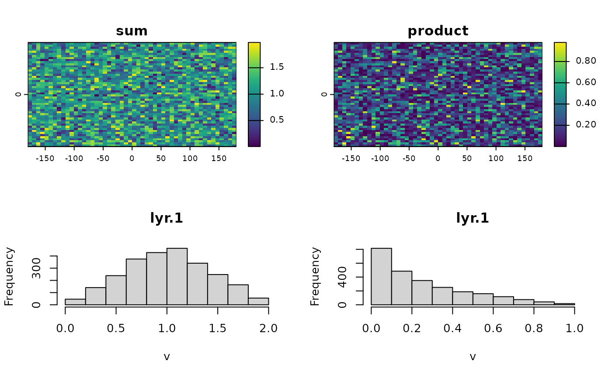

Histogram
hist.RdCreate a histogram of the values of a SpatRaster. For large datasets a sample of maxcell is used.
Usage
# S4 method for class 'SpatRaster'
hist(x, layer, maxcell=1000000, plot=TRUE, maxnl=16, main, ...)Arguments
- x
SpatRaster
- layer
positive integer or character to indicate layer numbers (or names). If missing, all layers up to
maxnlare used- maxcell
integer. To regularly sample very large objects
- plot
logical. Plot the histogram or only return the histogram values
- maxnl
positive integer. The maximum number of layers to use. Ignored if
layeris not missing- main
character. Main title(s) for the plot. Default is the value of
names- ...
additional arguments. See
hist
Value
This function is principally used for plotting a histogram, but it also returns an object of class "histogram" (invisibly if plot=TRUE).
Examples
r1 <- r2 <- rast(nrows=50, ncols=50)
values(r1) <- runif(ncell(r1))
values(r2) <- runif(ncell(r1))
rs <- r1 + r2
rp <- r1 * r2
opar <- par(no.readonly =TRUE)
par(mfrow=c(2,2))
plot(rs, main='sum')
plot(rp, main='product')
hist(rs)
a <- hist(rp)

a
#> $breaks
#> [1] 0.0 0.1 0.2 0.3 0.4 0.5 0.6 0.7 0.8 0.9 1.0
#>
#> $counts
#> [1] 816 483 352 250 188 159 117 76 42 17
#>
#> $density
#> [1] 3.264 1.932 1.408 1.000 0.752 0.636 0.468 0.304 0.168 0.068
#>
#> $mids
#> [1] 0.05 0.15 0.25 0.35 0.45 0.55 0.65 0.75 0.85 0.95
#>
#> $xname
#> [1] "lyr.1"
#>
#> $equidist
#> [1] TRUE
#>
#> attr(,"class")
#> [1] "histogram"
x <- c(rs, rp, sqrt(rs))
hist(x)
par(opar)